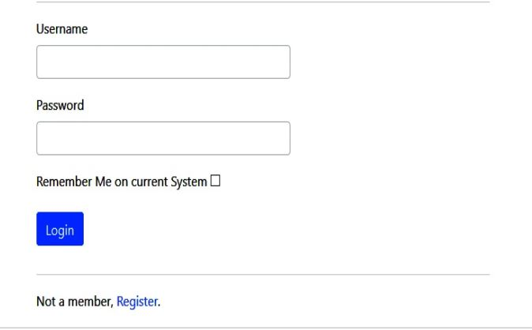
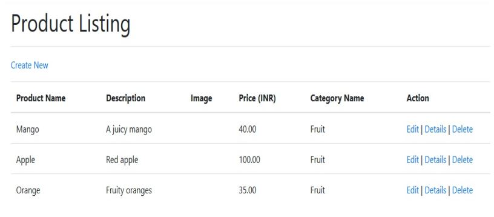
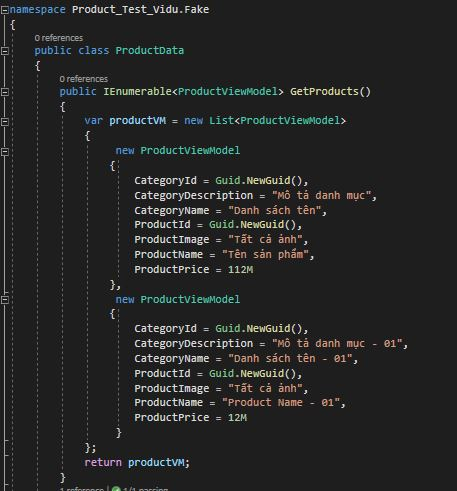
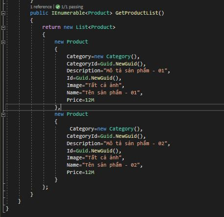
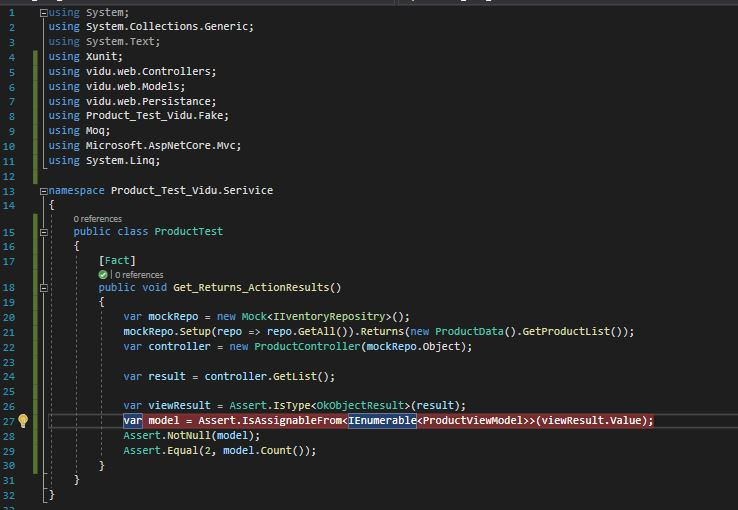
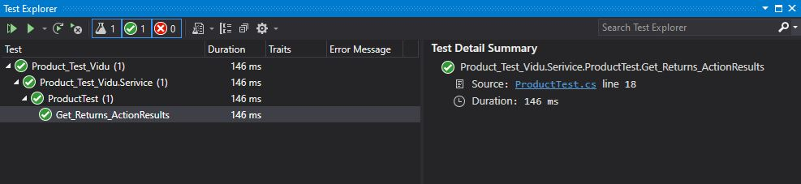

Implementing Design Patterns for Web Applications
We also covered User Interface (UI) architectural patterns such as Model-View-Controller (MVC), Model View Presenter (MVP) and others. The previous chapter aimed to discuss patterns such as MVC. We now need to extend our existing application to incorporate more patterns.
In this chapter, we will continue with our existing FlixOne web application and extend the application by working on code to see the implementation of authentication and authorization. In addition to this, we will discuss Test-Driven Development (TDD).
In this chapter, we will cover the following topics:
- Authentication and authorization
- Creating a .NET Core web test project
Project kickoff
Implementing Design Patterns for Web Applications – Part 1, we extended our FlixOne inventory console application and developed a web application. We extended the application after considering the following points:
- Our business needs a rich UI.
- New opportunities demand a responsive web application.
Requirements
After several meetings and discussions with the management, Business Analysts (BAs), and presales folks, management decided to work on the following high-level requirements: business requirements and technical requirements. The business team eventually came up with the following business requirements:
- Product categorization: There are several products, but if a user wants to search for a specific product, they can do so by filtering all products by their categories. For example, products such as mangoes, bananas, and more should come under a category called Fruits.
- Product addition: There should be an interface that provides us with a feature to add new products. This feature should only be available to users who have the Add Products privilege.
- Product updation: There should be a new interface where product updates should be possible.
- Product deletion: There is a requirement for administrators to delete products.
Authentication and authorization
Create, Read, Update and Delete = CRUD operation, which are available publicly to any user who is able to perform them. There is nothing coded to restrict a particular user from performing these operations. The risk with this is that users who are not supposed to perform these operations can easily do so. The consequences of this are as follows:
- Unattended access
- An open door for hackers/attackers
- Data leakage issues
Home Login
 
Product Test
Folder “Fake”   Folder “Service”  Product Test 